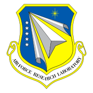

Research
Learn about the different branches of our research and how we engineer chip-scale systems for emerging quantum technologies.
ExploreWe are the Laboratory for Integrated Nano-Quantum Systems (LINQS) at Stanford University. Our research focuses on developing novel chip-scale devices that guide and control light, sound, microwaves, and quantum electrical signals in fundamentally new ways. These physical excitations each offer unique advantages for quantum communication, sensing, and information processing. By engineering how energy and information move between them, we aim to create a new class of devices with capabilities beyond those of conventional electronic hardware.
The technologies that shape modern life are built largely on silicon chips that process electrical signals. However, many of the most exciting opportunities in quantum science rely on other physical carriers of information. Light can transmit information across long distances with extremely low loss. Sound and mechanical motion can mediate interactions between otherwise distinct systems. Superconducting quantum circuits can generate and process fragile quantum states at microwave frequencies. Our work seeks to bridge these domains on chip, enabling coherent interactions between optical, acoustic, and electrical degrees of freedom. To that end, we develop new approaches to device design, nanofabrication, and characterization that can serve as the foundation for practical quantum technologies.
Learn about the different branches of our research and how we engineer chip-scale systems for emerging quantum technologies.
ExploreRead our latest papers and preprints in leading journals and archives across quantum science, nanophotonics, acoustics, and integrated devices.
ExploreMeet the researchers and collaborators working together to build the next generation of nano-quantum systems.
ExplorePlease feel free to contact us if you are interested in working with us as a student, postdoc, visiting scholar, or collaborator.
We gratefully acknowledge funding support from the U.S. Government through the National Science Foundation (CAREER and NSF-SNSF MOLINO program), the Department of Defense (DARPA INSPIRED program, AFOSR, ONR, and ARO MURIs), the Department of Energy (Q-NEXT), and the National Institutes of Health.
We also acknowledge significant support from the Moore Foundation and the Dave and Lucille Packard Foundation.
Finally, we acknowledge significant financial and technical support from Amazon Web Services and NTT.
